Acompaña
Procesos comunitarios y contextos de vulnerabilidad con escucha, cuidado y participación.
Payaso social · arte · comunidad
Una propuesta de payasería social y humanitaria para acompañar comunidades, instituciones y contextos de vulnerabilidad.
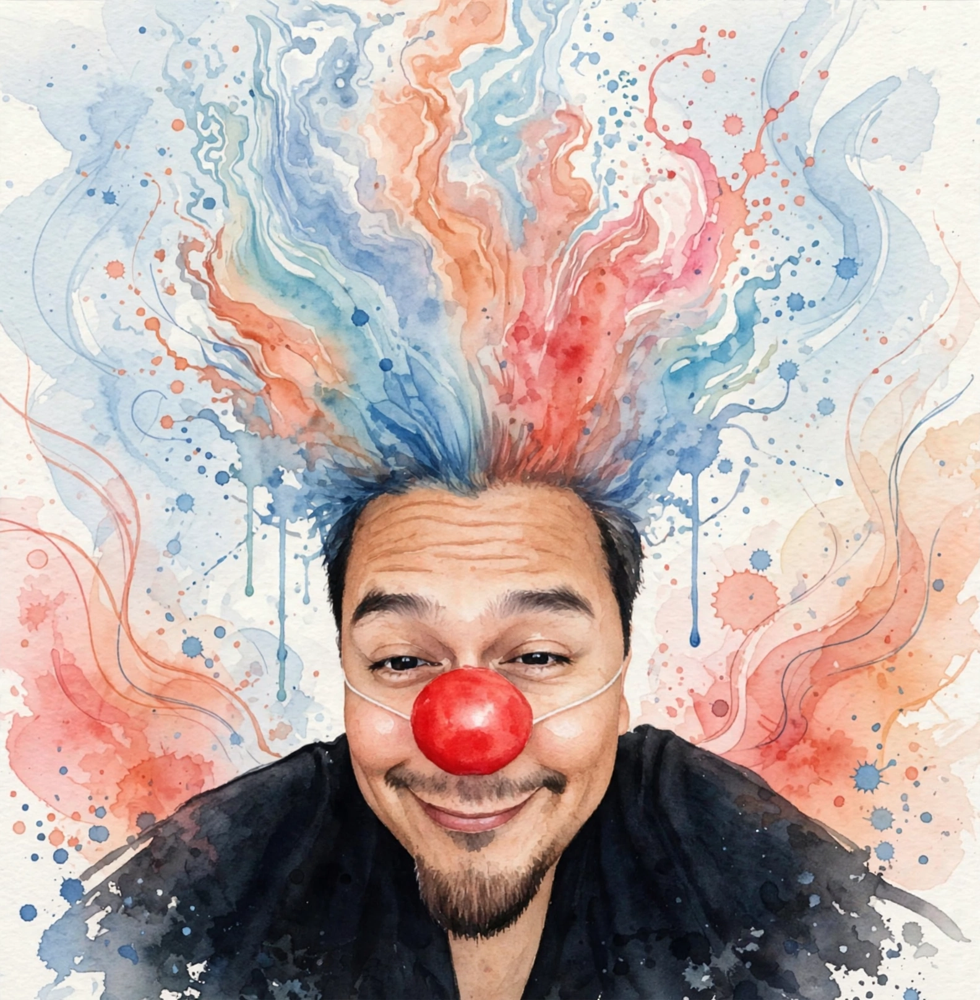
¿Quién es Chiflip?
Chiflip es el personaje clown de Gilberto Valenzuela Herrera: médico, docente, investigador y payaso social humanitario. Acompaña desde el juego, la escucha y la presencia para crear comunidades más humanas y resilientes.
Chiflip, personaje clown de Gilberto Valenzuela Herrera, articula arte, salud, educación, trabajo comunitario e investigación social. Su práctica comprende al clown como una herramienta de encuentro, escucha y acompañamiento para personas y comunidades que atraviesan violencia, desplazamiento, vulnerabilidad o emergencia.
Su práctica no sustituye servicios médicos, psicológicos o de emergencia; abre un espacio sensible para recuperar vínculo, dignidad e imaginación.
Desde esta visión, la risa no elimina una emergencia, pero puede ayudar a recuperar por un momento la capacidad de relacionarse, imaginar y resistir. A esta fuerza la nombra risastencia: risa como gesto de dignidad, vínculo y vida frente a la adversidad.
Procesos comunitarios y contextos de vulnerabilidad con escucha, cuidado y participación.
El clown como lenguaje de encuentro, vínculo, alegría y transformación comunitaria.
Talleres y reflexión para fortalecer capacidades de cuidado, resiliencia y trabajo comunitario.
Procesos en México y España, incluyendo Carolina Dream, Barcelona.
Proyecto de intervención en red entre México, España y Colombia.
Artículo “La sabiduría del payaso”, firmado por Gilberto Valenzuela Herrera.
Ver fuenteGira documentada por Clowns Without Borders en comunidades de Acapulco.
Ver fuenteTrabajo Social de la Emergencia como línea doctoral y comunitaria.
Formación clown registrada por perfil académico UAGro y participación en experiencias artísticas y comunitarias.
Maestría en Innovación en Intervención Social y Educativa, docencia universitaria y formación comunitaria.
Formación médica y experiencia comunitaria orientada al bienestar, sin sustituir servicios clínicos.
Talleres para personal de salud, equipos comunitarios, conversatorios y proyectos humanitarios.
Una experiencia para reconectar con juego, presencia y creatividad.
Talleres y recursos para cultivar bienestar, atención y energía creativa en comunidad.
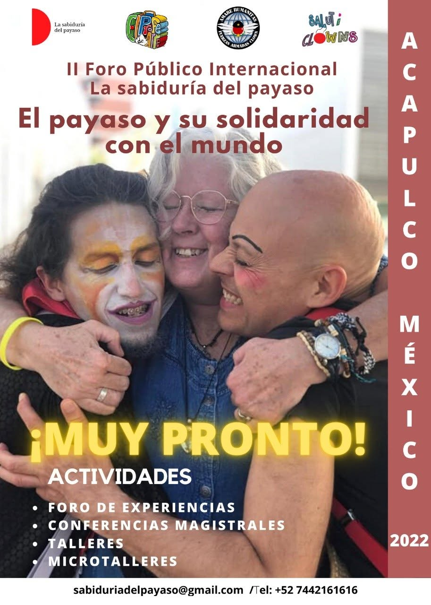
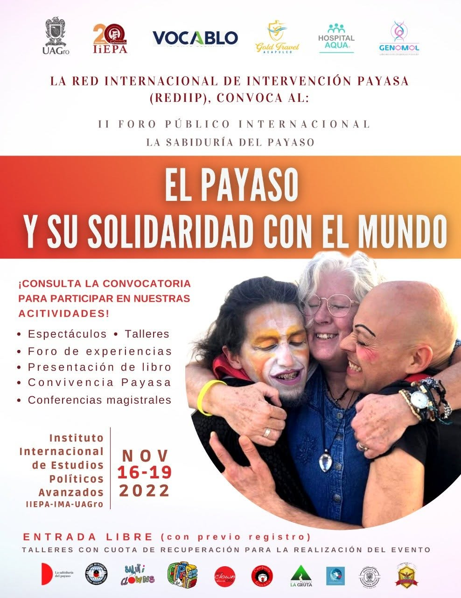
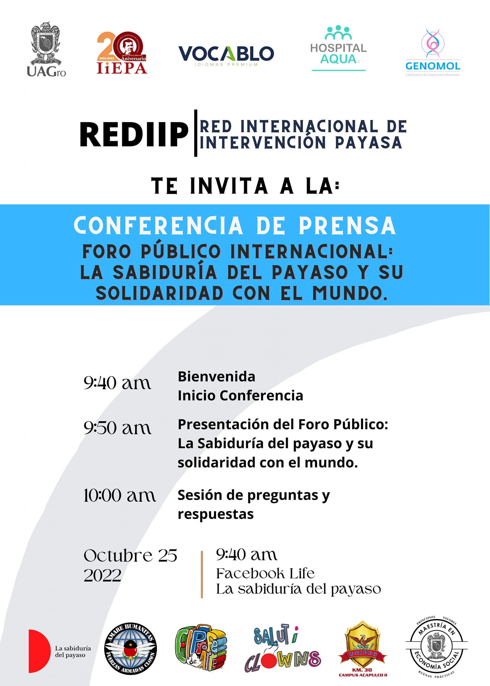
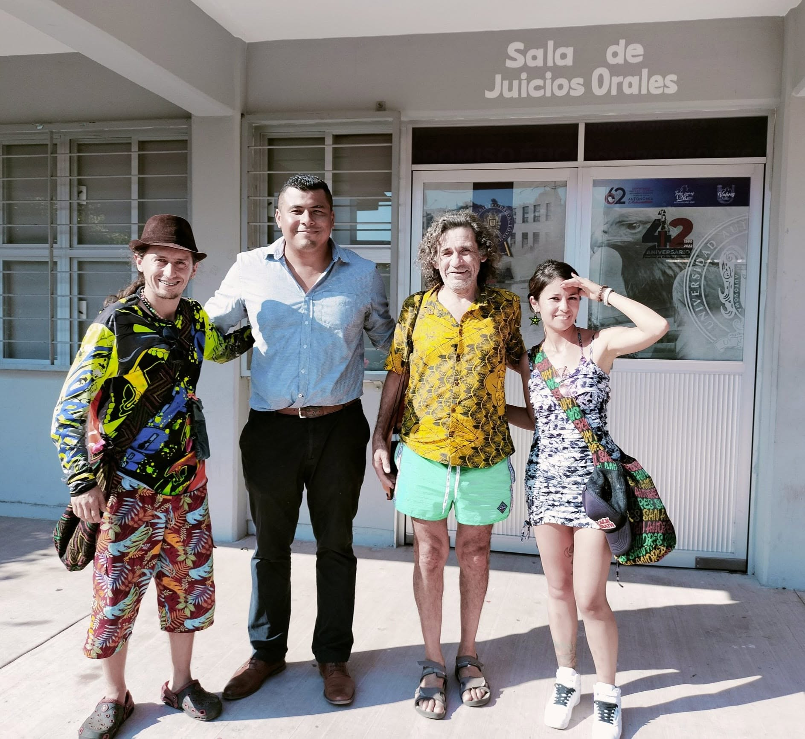
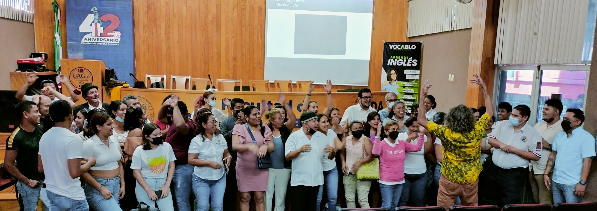
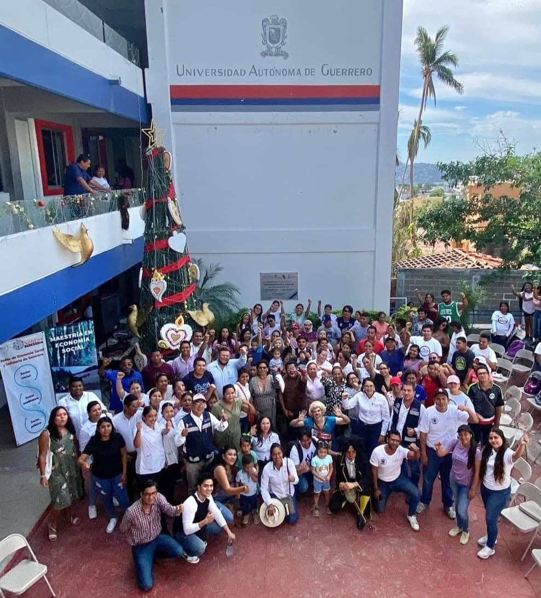
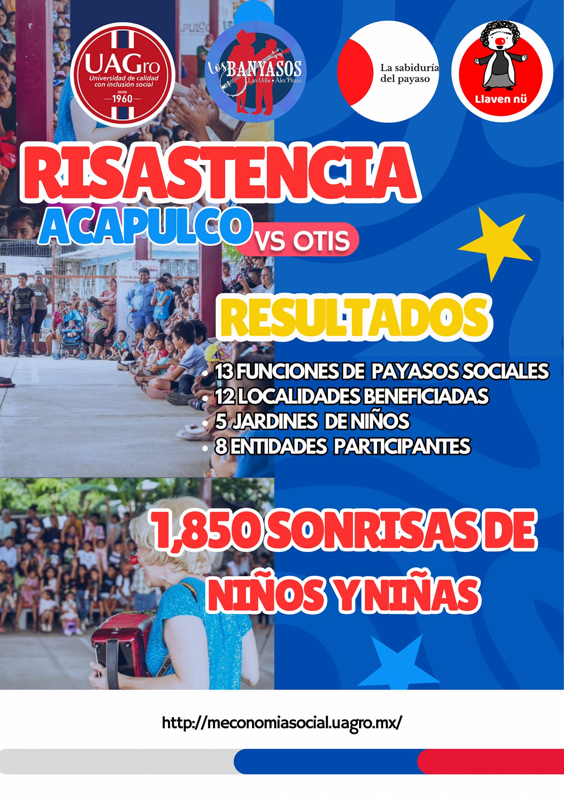
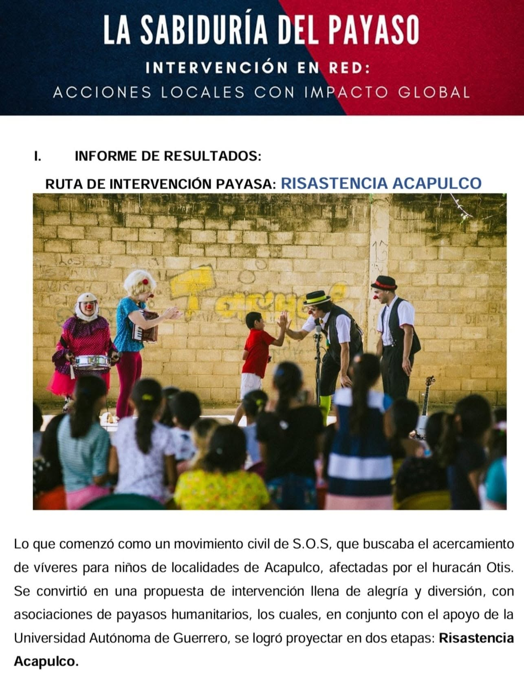
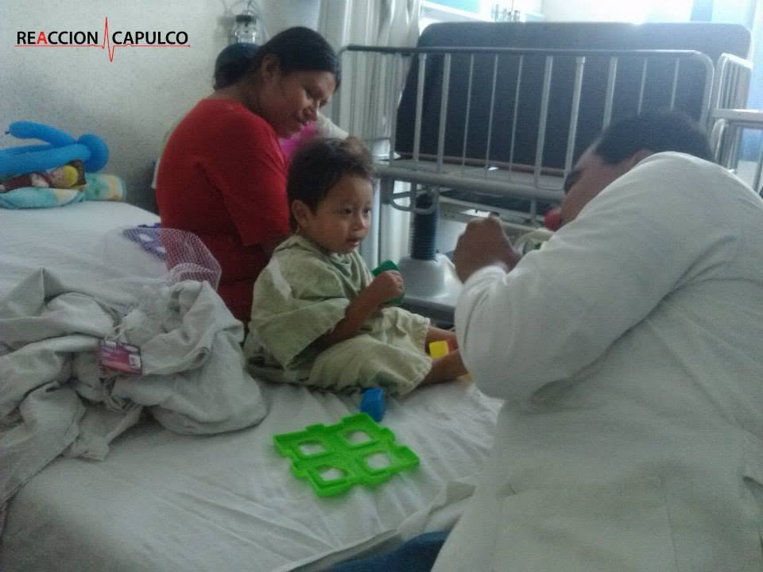
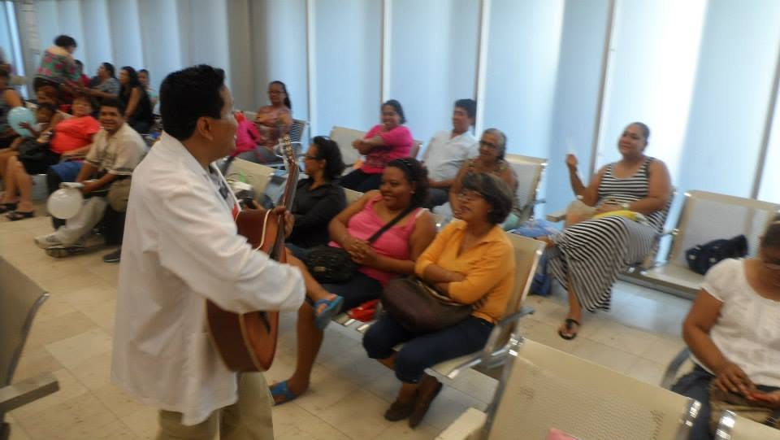
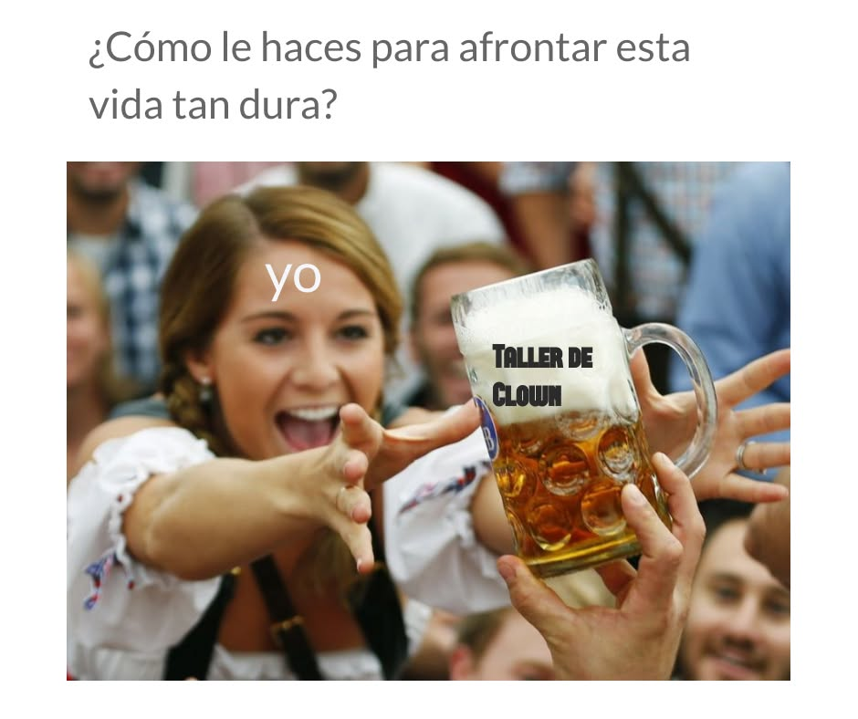
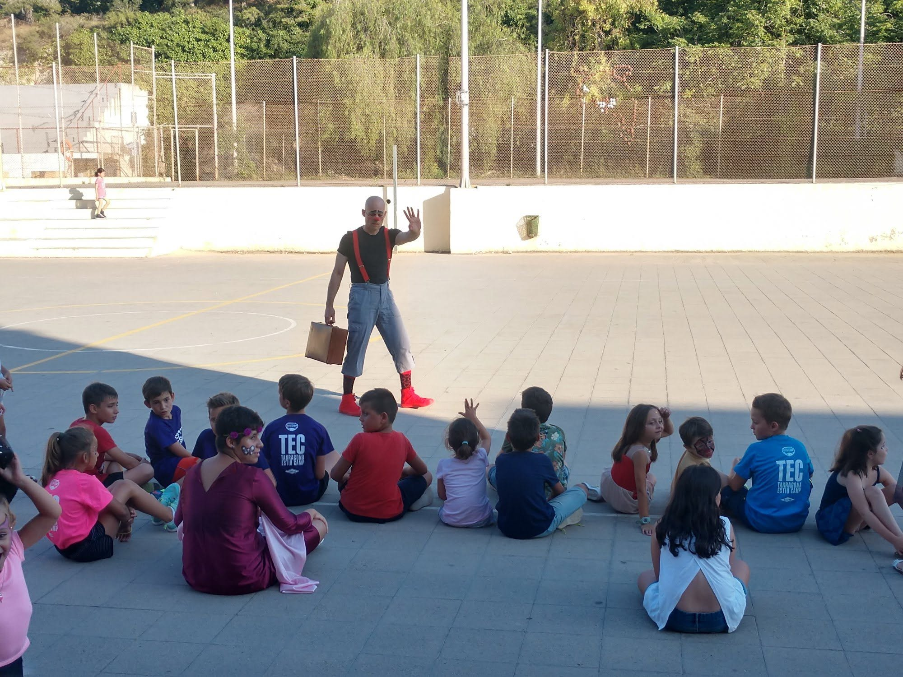
Para talleres, colaboraciones, intervenciones comunitarias o proyectos institucionales.